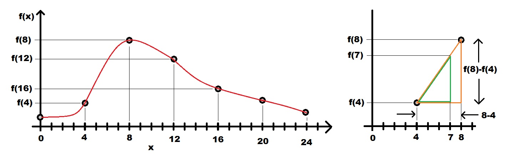
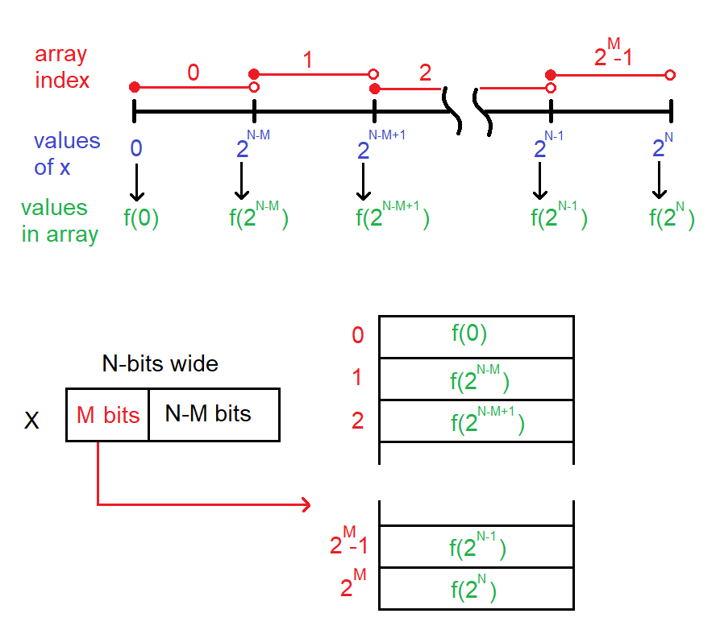

| Lecture: | 30 |
| Objective: | To understand how to use a look-up table to interpolate values between table elements. |
| Excel: | lut.xlsx |
Look up Table (LUT)
Lets say that you wanted to compute the square root of a value using the PIC. If you were lucky enough to have a compiler which provided this function you could just use the math library functions. On the other hand, if you did not have the use of such a library, you would have to figure out a way to compute the square root.There are a lot of ways that you could compute the SQRT function. You could crack open a math book and find an analytic expression which would produce a value for the SQRT function. Unfortunately, this approach often leads to timely computations. Another approach would be to enumerate every possible value of x and its square root. We could then look-up a SQRT in the table, by going to the row corresponding to x and retrieving its value. This approach seems silly because it would use a lot of space. If we reduced the size of the table by eliminating some of the entries then we would save space at the expense of introducing error - if you wanted the SQRT for x and its entry was not in the table then you would have to use the closest x in the table. A good compromise among all three of these design constraints (space, time, and error) is to use interpolation in a partial look-up table (LUT).
"Interpolation is a mathematical method of creating missing data. ... There are many methods of interpolation, but one simple method would be to generate a new value by using the average of the value of the two values on either side of the one to be created." This average is also referred to as linear interpolation.
Let's look at an example. In the left graph we have the plot of some hypothetical function f(x) shown in red. We will store every fourth value of f(x) at x = 0,4,8,12,16,20, and 24 and use these values to interpolate the values of f(x) for the other values of x. For example, let's say that you wanted to compute the value of f(7). To do this we will approximate the actual red function f(x) between x=4 and x=8 as a straight line between x=4 and x=8 shown in orange at right. This linear approximation forms the hypotenuse of the orange right triangle. To determine the value of f(7) we take a portion of the orange hypotenuse between x=4 and x=7 forming the hypotenuse of a smaller green right triangle.

To determine f(7) let's look at the orange triangle. Since we have stored the values of f(4) and f(8), we know the height of the orange right triangle equals f(8)-f(4). Second, we know the base length of the orange triangle because we stored every fourth sample of f(x). The base length is 4.
Now for the green triangle. It has a height of f(7)-f(4) and a base length of 3. Since the the orange and green triangles are similar triangles, the ratio of each triangle's height to base is equal. Doing the math provides the equality.
f(8) - f(4) f(7) - f(4)
---------- = ---------- Solving for f(7) yields
4 3
f(7) = f(4) + 3/4(f(8)-f(4))
Firmware concepts
Let's take this expression for f(7), extract some general concepts and turn it into code. Let's start by storing the values of f(0), f(4), f(8), ... f(24) into an array. The next problem is how, given the value of 7, do we get the index of f(4) or f(8) to use in our calculation? Since we sampled the function f(x) at every fourth value, we need to know which "fourth value" is 7 closest to. This is the same as dividing 7 by 4 and discarding the fraction. 7/4 = 1.75 so we should use index 1 from the array of stored function values. This is f(4). Adding 1 to the index always produces the next stored value, in our case this is f(8). Looking at the expression for f(7) all we need is a way to compute the "3/4". This expression describes how far along through the "fourth value" we have traversed. This is the same as the fractional portion of 7/4 that we discarded earlier. In our case, this was 0.75 which is exactly 3/4.The following firmware formalizes these observations. To compute the value of f(7) the function will have x = 7. I looked at the red graph in the plot above and made a guess at the values of f(x) at the seven stored points and came up with the values 10, 20, 100, 60, 40, 30 and 20. The first thing you see in the f function below is these values stored in an array func. I used uint8_t data type because all the function values are between 0 and 255.
The first thing that our code need to compute is the index into the func array. This is done by computing 7/4 and discarding the fraction. We can do this by shifting 7 right by 2 bits. I next computed the value of f(8) - f(4) and stored it in a variable delta. This code ignores the possibility that delta could be negative. For the most part this is not an issue as long as delta does not overflow and the output from the function is a positive value. Next, we need to compute the fraction 3/4. This is done in two separate steps, first we mask off the least two significant bits of x by ANDing with 0b00000011. This half of the fraction is stored in a variable frac. The other half of the computation, dividing by 4, is accomplished in the return statement when, after multiplying the delta value by frac, we divide by 4 (by shifting right 2 bits).
//----------------------------------------------
//----------------------------------------------
uint8_t f(uint8_t x) {
uint8_t func[7] = {10, 20, 100, 60, 40, 30, 20};
uint8_t index, delta, frac;
index = x >> 2;
delta = func[index+1] - func[index];
frac = x & 0b00000011;
return (func[index] + (frac*delta)>>2);
}
Square Root
Now lets examine how to determine a square root. The purple curve in the graph below shows the true value of the SQRT function for the integers 0-15. The yellow curve in the graph below represents the values of the SQRT function for 4 equally spaced values. These values are given in the table to the left of the graph.
| 
|
Firmware for square root
We will create a function to compute the square root using linear interpolation with fixed-point. We start by deciding on the fixed point representations The input argument is a 4-bit integer in the range 0-15. The output is a number between 0.0 and 3.99 and include some fractional part. Since 8-bit values are the norm with the PIC, it makes sense to make the output an 8-bit value, but where to stick the decimal point? Since the whole number portion of the answer is in the range 0-3, it makes sense to have 2 whole number of bits and 6 fractional bits. Hence, the decimal is after the second bits.You may be concerned that the last entry in the square root table, 4.0, cannot be represented as a 2.6 format number. You re correct. However, representing the value 4.0 would require us to change the format to a 3.5 format for a single numerical value. If we choose instead to approximate the value 4.0 as the 2.6 format number 0b11111111 we would be awfully close to the actual value. Furthermore, allowing for this small error in a single representation gains us an extra decimal point for every output. The decision was made to accept this trade-off.
//----------------------------------------------
// Fnc SQRT
// In A 4-bit integer
// Out An approximate SQRT in 2.6 format
// Pur This function computes a linearly
// interpolated value for the SQRT
// function. There are some significant
// data type issues that will have to
// be resolved - note the use of "type"
// in the function is a place-holder.
//----------------------------------------------
uint8_t SQRT(uint8_t x) {
uint8_t lut[5] = {0x00, 0x80, 0xB5, 0xDE, 0xFF};
uint8_t base, index, delta, frac;
index = x >> 2;
delta = lut[index+1] - lut[index];
frac = x & 0x03;
return(base + (frac*delta)>>2);
} // end SQRT
General theory
Look-up tables are wonderful creations; the same function is able to approximate any function just load up an array of sampled values into an array and use the same program structure. For the sake of the following discussion, call the input argument x. The operations performed in the look-up table function are dependent on:- The number of different possible inputs, denoted 2N. For example, in the SQRT function, there were a total of 16 different possible inputs. In the image below, the different values of x are shown in blue. So for the SQRT fucntion, N = 4.
- The number of entries in the array, denoted 2M+1. For example, in the SQRT function, there were 5 entries in the array.
- The red lines below the array index numbers show the interval of x values associated with that array index. These intervals are closed on the left and open on the right. So for example, the inputs [0 … 2N-M-1] are associated with f(0).
- The last value of x, the blue 2N is not a legal input to the function and exists to provid a bookend for interpolation in the last interval.
- The last value store in the array f(2N) is the bookend value for interpolation in the last interval.
- Each array index interval has 2N-M values of x in it.

In order to perform the interpolation the bits of x are divided into two parts; those that are used to index the LUT array and those that are used in the interpolation. Let's start with how to form the array index.
You should be able to note that you can derrive the array index by dividing x by 2N-M and discarding the remainder. For example, a x value in the range [2N-M … 2N-M+1) corresponds to array index 1. Let this x = 2N-M+y. Now, (2N-M+y)/2N-M = 1 with a remainder of y. So this idea checks out. Dividing x by 2N-M (and discarding the remainder) is equivlent to shifting x right N-M bits. Hence the line of code index = x >> (N-M); Let's now look at how to form the fractional component.
Let the value of x be associated with array index α The interval from f(2α)(inclusive) … f(2α+1) (exclusive) is associate with 2N-M values of x. The fraction in the interpolation measures how far through this interval the value of x is. In order to get into the interval we used the most significant M bits of x. The remaining least-significant N-M bits are how far we are through the inteval. Hence we have the line of code frac = x & 0b0001…1, where there are N-M 1's in the binary mask.
Test your understanding
You can find the solutions embedded in the "source code" for this web page by right mouse clicking on this web page and selecting "view source". The solutions are in HTML comments.- Modify the square root LUT so that it has 9 entries instead of 5.
Do this by completing the following table.
X SQRT(X) in decimal SQRT(x) 2.6 Fixed point 0 0 2 1.41 4 6 8 10 0xCA 12 14 16 - Use the 9-entry LUT from the previous problem in a new SQRT function. The input to this function is an unsigned 8-bit integer in the range [0-15]. The output is a fixed point 2.6 format number.
- Create a LUT for the arcsin function by completing the following table.
x arcsin(x) in decimal arcsin(x) in 1.7 Fixed point 0.000 0.125 0.250 0.375 0.500 0.625 0x56 0.750 0.875 1.065 1.000 - Write a function which compute the arcsin of an input represented in 0.8 format number and returns the output represented as a 1.7 format number.
- Final project idea
Make a room mapper by mounting an ultrasonic range finder on top of the servo motor. Program the PIC to step in 10° increments from 0° to 180°. At each step the HCS12 should stop, average 8 ultrasonic range values together, record this value in an array and move to the next step. After a complete sweep, your program should plot the data as a text plot. Let's examine an example and how you could accomplish this.
The table below shows example data gathered from the ultrasonic rang finder when placed in the middle of a square enclosure with tall walls. The ultrasonic range finder gathered the data in the "Range" column. The "Angle" column is provided for your reference.
I computed the entries in the "Cos" column in Excel by multiplying the cosine of row's angle by a scaling factor (in this case 128) and rounding to the nearest integer. Your program would need to store this array of cosine values in an array, under no circumstances should you ask the HCS12 to compute the cosine of an angle! I performed a similar procedure to compute the entries in the "Sin" column.
I computed the entries in the "Range*Cos" column by multiplying the "Range" entry by the "Cos" entry and dividing by a scaling constant (in this case 4). The scaling constant "squeezes" the range of the ultrasonic range finder from 100's of centimeters to something that you can plot on a 24 row x 80 column text terminal. Additionally the scale factor should be a power of 2 so that you can replace division by a shift right operation.
You can then plot the "Range*Cos" and "Range*Sin" data using a text interface to produce somthing like the following.Angle Range Cos Sin Range*Cos Range*Sin 0 100 128 0 25 0 10 102 126 22 25 4 20 106 120 44 25 9 30 115 111 64 25 14 40 131 98 82 25 21 50 131 82 98 21 25 60 115 64 111 14 25 70 106 44 120 9 25 80 102 22 126 4 25 90 100 0 128 0 25 100 102 -22 126 -4 25 110 106 -44 120 -9 25 120 115 -64 111 -14 25 130 131 -82 98 -21 25 140 131 -98 82 -25 21 150 115 -111 64 -25 14 160 106 -120 44 -25 9 170 102 -126 22 -25 4 180 100 -128 0 -25 0 35 +--------------+---------------+ | | 30 + + | | 25 + * * * *** * * * + | | 20 + * * + | | 15 + * * + | | 10 + * * + | | 5 + * * + | | 0 +---*----------+-----------*---+ -32 0 32